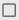
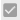
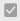

Selecting Projects
Selecting Projects
Single project selections are made by clicking anywhere on the row. Click on an un-selected row to select it; click on a selected row to un-select it. Selected projects are easily recognized by the bold italics project name and the distinctive highlighted row color displayed when the control has focus.
Multiple projects can be selected by using the following keyboard shortcut keys:
- <Control>-Enter: Add or remove single projects from the current selection list. Click on any project while pressing this key combination — if it was not selected it will become selected and vice-versa.
- <Control>-A: Select all projects matching the current filter. This is typically used in combination with the project filter. At least one project must be selected, however, for this to take effect.
- <Shift>-Click: After clicking on a project, press the <Shift> key then click on a project either below or above the originally selected project. The first and last projects will be selected, along with all projects located between them.
Multi-Select = Off — Manage members of the selected (single) project only:

Multi-Select = On —Manage members on multiple Projects simultaneously:
 The Select All Projects button provides a fast and easy way to select all projects for the current Hub. This button is enabled at all times. If Multi-Select is "Off" when the Select All Project button is clicked, the Multi-Select will automatically be set to "On" and all projects will be selected. The Select All Projects button can be pressed regardless of the current Multi-Select setting. It is important to note that when performing Select All via this route, the current filter is cleared and all items are selected. If no filter is currently applied, then all projects for the current Hub are selected.
The Select All Projects button provides a fast and easy way to select all projects for the current Hub. This button is enabled at all times. If Multi-Select is "Off" when the Select All Project button is clicked, the Multi-Select will automatically be set to "On" and all projects will be selected. The Select All Projects button can be pressed regardless of the current Multi-Select setting. It is important to note that when performing Select All via this route, the current filter is cleared and all items are selected. If no filter is currently applied, then all projects for the current Hub are selected.
 The Select All Projects checkbox serves the same purpose but will only select all projects currently in presented in the view. but will only be enabled if Multi-Select is "On". It is important to note that when performing Select All via this route, the current filter is applied and only filtered items are selected. If no filter is currently applied, then all projects for the current Hub are selected.
The Select All Projects checkbox serves the same purpose but will only select all projects currently in presented in the view. but will only be enabled if Multi-Select is "On". It is important to note that when performing Select All via this route, the current filter is applied and only filtered items are selected. If no filter is currently applied, then all projects for the current Hub are selected.
Enabled:

With the checkbox disabled, it is unavailable. This makes perfect sense since, by definition, in Single select mode only one project at a time may be selected.
However, when set to Multiple, it is enabled and ready for use.
Disabled:

Whenever the checkbox is enabled and appears as the 'minus' sign, as above, manually checking it deselects all projects, as shown below.

The checkbox is a three-state control. With it unchecked

, checking it once selects all projects and sets the checkbox to
. Checking it again leaves the selection unchanged, but changes the checkbox state to . As seen above, this is the same as when a multiple selection is made manually. Finally, clicking it a third time deselects all projects and returns it to the initial, 0 records selected state.Note — The Selected button is a 3-state control and, when directly clicked, functions the same as similar buttons found elsewhere throughout Naviate Cloud Manager:
|
Button state before clicking |
Button state after clicking |
Result |
|
 |
All currently visible projects are selected. If no filter is set, then all projects are selected. If a filter are set, only those rows displayed by the filter are selected. |
|
|
No change occurs. Button can also arrive at this setting as a result of manually unchecking one or more of the projects when all projects have been checked. |
||
|
All projects are deselected, regardless of filter setting. |
The total selected projects is indicated by the number to the right of "Selected:". In this case, 0.
The total filtered projects is indicated by the number to the right of "Filtered:". In this case, 2.
The total projects in the hub is indicated by the number to the right of "Hub Total:". In this case, 2256.
This means that, out of 2256 total projects in the hub, the filter criteria matched with 2 projects and none are selected.

Sort Cache By Dropdown:
Since the Members Module works on a cached basis, the ability to sort project order by three separate categories, have been provided. Projects with no last synced date on the cached data will be marked with a "Not Available" (Please see in examples below):

- Alphabetical (default): Sorts the projects in alphabetical order starting with A and ending with Z:

- Newest: Sorts the projects from latest "Last Synced Date (Cache Data)" to earliest with "Not Available" put last:

- Oldest: Sorts the projects from the earliest "Last Synced Date (Cache Data)" to the latest with "Not Available" put last:

The Search-Select Tool
The Search-Select Tool simplifies and speeds up the process of searching and selecting specific projects in bulk.

Once the Search-Select Tool button is pressed, the following screen will appear:

The tabs "Project Names" and "Job Numbers" are used to choose to search and select by either Project Names OR Job Numbers. Please note that only one tab (Either by "Project Names" OR "Job Numbers") can be used at a time to automatically search for and select entered search terms.
The search term is the term entered by the user and the search item is the item which will be searched for (Either Project Name or Job Number).
The search terms need to be separated by line items meaning that after each term, enter should be pressed to ensure that each search term is on its own line. Please see the example below.
There are filter tools that can be used to specify how the search term needs to match the search item;
- Contains: Means that the search item will contain the search term (depending case sensitivity setting).
- Match Exactly: The search term and search item need to match exactly (depending case sensitivity setting).
- Starts with: The search item must start with the search term (depending case sensitivity setting).
- Ends with: The search item must end with the search term (depending case sensitivity setting).
- Does not contain: The search item must not contain the search term (depending case sensitivity setting).
- Match Case: Sets whether the search term is case sensitive or not.
 : Case will not be matched. For example, a search for "SyMeTri_U" will select projects that are have "Symetri_u" contained in the name.
: Case will not be matched. For example, a search for "SyMeTri_U" will select projects that are have "Symetri_u" contained in the name.
 : Case will be matched. For example, a search for "SyMeTri_U" will NOT select projects that have "Symetri_u" contained in the name.
: Case will be matched. For example, a search for "SyMeTri_U" will NOT select projects that have "Symetri_u" contained in the name.
The Paste From Clipboard button allows a user to create the list of search terms using external applications and paste them within the search lines.
The Clear Search Terms button clears all currently entered search terms.
The Continue button continues with the search select process.
The Cancel button cancels the search select process.

Once "Continue" is pressed, the following screen pops up indicating how many projects were selected during the process and how many projects are selected in total:

And the project names (search items) that matched the search term (and criteria) have been selected. Additionally, the Multi-Select toggle was automatically switched to "On" seeing that more than one search item matched the search term:

If instead, the "Cancel" button was pressed, the following screen would have popped up, indicating that the process was canceled and no additional projects were selected:

Last notes:
The Members Section contains more information on the following topics:
When a user is already included in the selected project(s), a icon (see below) in the Hub Members view will be present. If, however, a user who is already assigned to a project is selected for the Import process, the system recognizes they are assigned and skips them:

Additionally, a Search-Select Tool is also available in The Members Section.It serves the same purpose but intended for members. More information on this can be found in the Selecting Members section.